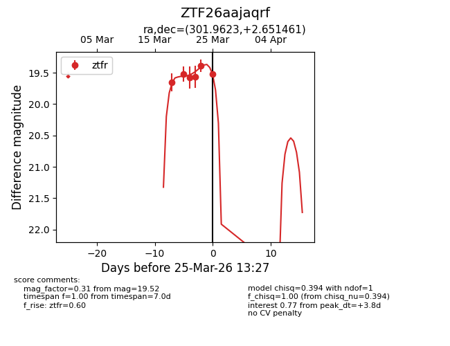
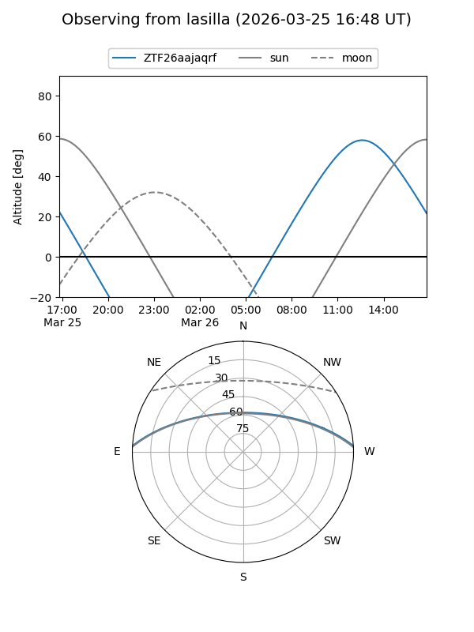
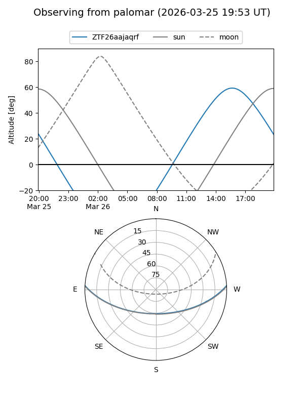
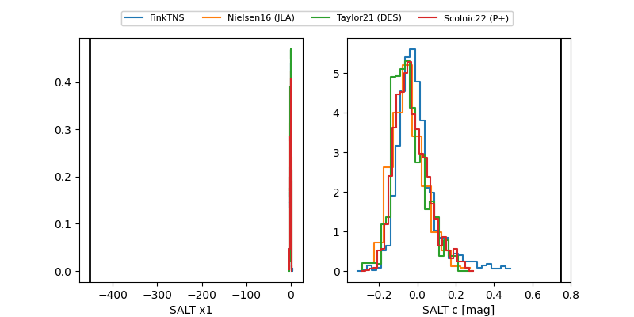

ZTF26aajaqrf
Target ZTF26aajaqrf at 2026-03-25 13:29
Aliases and brokers:
FINK: link
Lasair: link
ALeRCE: link
alt names
ZTF26aajaqrf (ztf,fink_ztf)
Coordinates:
equatorial (ra, dec) = 301.9623,+2.65146
equatorial (HMS+DMS) = 20:07:50.96,+02:39:05.26
galactic (l, b) = (44.3267,-15.65572)
Flags:
Photometry:
last ztfr=19.52
6 ztfr detections
Lightcurve

Visibility


Additional plots
